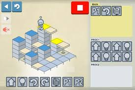

Kentucky Science Center
Hour of Code
Participate in the Hour of Code™ at the Kentucky Science Center
The “Hour of Code™” is a nationwide initiative by Computer Science Education Week and Code.org to introduce millions of students to one hour of computer science and computer programming.
While some of these are more TinyKid friendly than others, they're all accessible to older folks as well. So don't be shy -- dive on it!
testing text
testing text
testing text
testing text